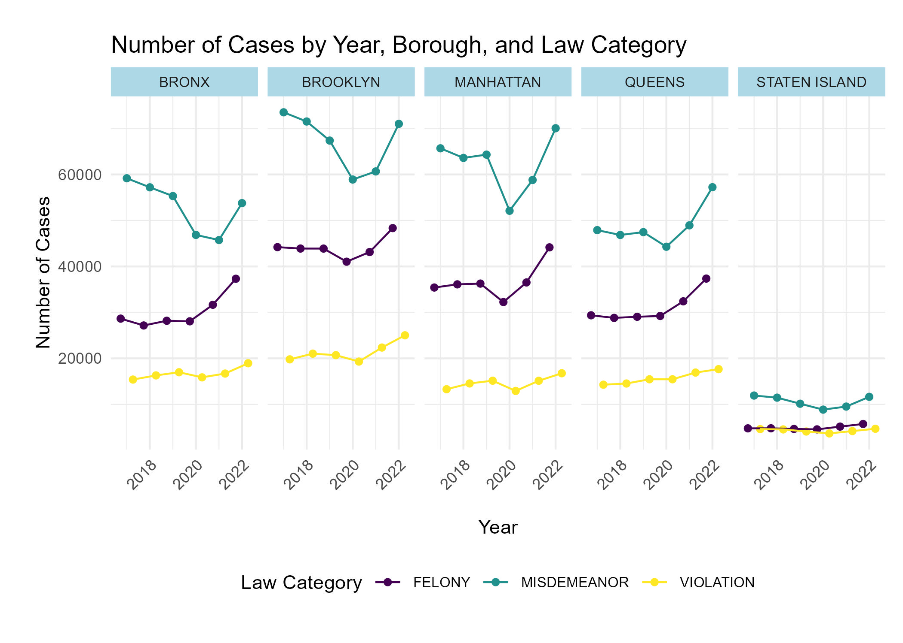

Crime Count
From 2017 to 2019, a subtle decrease in reported cases occurred,
followed by a significant drop in 2020, possibly due to the COVID-19
pandemic and related factors. Post-2020 saw a rapid increase in cases,
surpassing previous years.
Brooklyn consistently led in reported crimes from 2017 to 2022,
followed by Manhattan; Staten Island consistently reported the lowest
cases. Notably, Queens overtook the Bronx in reported cases in 2021.
North Crown Heights/Prospect Heights consistently reported the fewest
cases, while Morningside Heights/Hamilton Heights consistently had the
highest, except in 2020 when East Harlem topped. The top three
neighborhoods overall are Morningside Heights/Hamilton Heights, East
Harlem, and Chelsea/Clinton/Midtown.

In Bronx, Brooklyn, Manhattan, and Queens, misdemeanors were most
common, followed by felonies, with violations least common, except for
Staten Island, where felony and violation cases are more balanced.
Staten Island’s lower case count is likely due to its smaller
population. Cases in Bronx, Brooklyn, Manhattan, and Queens show
consistency, with felonies increasing each year (except 2020),
misdemeanors declining from 2017 to 2020 and then rising, while
violation cases remain relatively constant.
PETIT LARCENY tops the list of reported crimes in New York City,
followed closely by HARASSMENT 2 and ASSAULT 3 & related offenses.
These patterns persist across boroughs, with Manhattan showing a
distinctive focus on GRAND LARCENY, and STATEN ISLAND exhibiting a shift
to CRIMINAL MISCHIEF & RELATED OFFENSES as the third most reported
crime. In the BRONX, HARRASSMENT 2 surpasses PETIT LARCENY in reported
cases. Recognizing these trends can inform targeted crime prevention
strategies tailored to each borough’s specific needs, emphasizing the
prevalence of theft in Manhattan and consistent concerns about
harassment and assault citywide.
Offense Type
The top 10 most frequent crime types constitute a substantial 80.5%
of all crime cases reported to the NYPD from 2017 through 2022,
revealing a concentrated pattern of offenses. Within this dataset,
‘Petit Larceny’ stands out for its relative stability year over year,
consistently forming a significant segment of the reported offenses.
Examining the daily temporal pattern, we observe pronounced peaks for
offenses such as petit larceny, harassment 2, and grand larceny during
the hours from 11 AM to 6 PM. This trend likely correlates with
increased daytime activity when the streets are bustling, and the
opportunity for these crimes escalates. The timing of these peaks
coincides with the busiest periods in public spaces, suggesting a
potential link between crime frequency and population density.
Conversely, all offenses demonstrate a substantial decrease in
frequency around the early hours of 5 AM and 6 AM. This trough in
criminal activity can be attributed to the minimal pedestrian and
vehicle traffic at these times, along with a general reduction in social
interactions as most individuals are home, thus lowering the risk and
opportunity for offenses.
These temporal insights are invaluable for stakeholders such as law
enforcement agencies and community leaders, who could leverage this data
to optimize resource allocation, aiming for effective crime prevention
and timely response. Furthermore, this analysis can trigger deeper
inquiries into the causal factors behind the peak times for specific
offenses, guiding the development of targeted crime prevention
strategies and interventions. Understanding the rhythm of criminal
activity empowers decision-makers to adopt a more strategic approach in
combating crime and enhancing community safety.
Our interactive map highlights that Manhattan, Queens, and the Bronx
are areas with higher crime rates. This could be due to various factors
like population density, socio-economic conditions, or policing
strategies. Neighborhood Variations: An interesting observation is that
the Upper East Side in Manhattan has significantly lower crime rates
compared to its neighboring areas. This could be attributed to factors
like higher income levels, better security measures, or lower population
density.